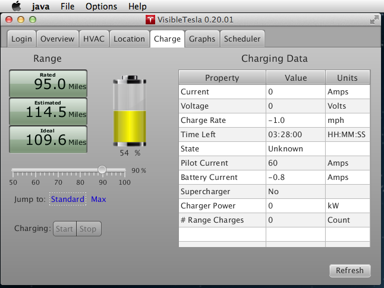
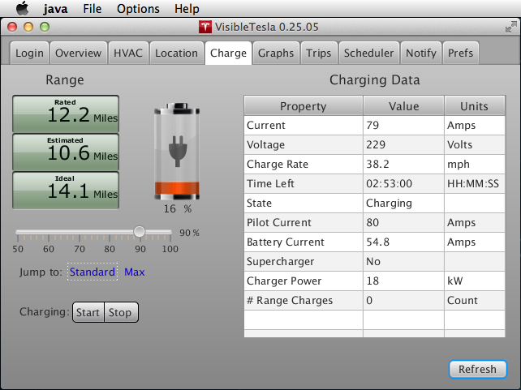

The Charge Tab
The Charge Tab allows you to monitor and control your car's charging process. It let's you manually start or stop charging and it lets you set the charge target (the level to which you want the car to charge). Charging can also be started or stopped on a schedule using the Scheduler Tab
There are quite a few pieces of data in the Charge Tab as shown in the screen shot below. In this example, the car is not connected to a power source.
The following table lists all of the elements and describes what each element represents.
| Item | Description | ||||||||||||||||
|---|---|---|---|---|---|---|---|---|---|---|---|---|---|---|---|---|---|
| Current | The amount of current being supplied to the vehicle. If it is a European vehicle, VsibleTesla will check whether the connected power is 3-phase. If it is 3-phase, a ③ will be displayed after the word "Current". | ||||||||||||||||
| Voltage | The voltage being supplied to the vehicle | ||||||||||||||||
| Charge Rate | How many miles of range are being recovered per hour of charging | ||||||||||||||||
| Time Left | Estimated amount of time until the charge will be complete | ||||||||||||||||
| State |
|
||||||||||||||||
| Pilot Current | The amount of current reported to be available from the attached power source | ||||||||||||||||
| Battery Current | The current flowing into the battery (or out if negative) | ||||||||||||||||
| Supercharger | Is the vehicle connected to a supercharger. HPWC does not qualify | ||||||||||||||||
| Charger Power | The power in kW being supplied at the moment the reading was taken | ||||||||||||||||
| # Range Charges | The number of consecutive range charges since the last standard charge. If you range charge three times in a row, this will display '3'. If you perform a Standard charge, it will be reset to 0. This count is not maintained by VisibleTesla. It is maintained by your car. The count is only incremented if your range charge completes. Even if it reaches 99% and you stop the charge, your car will not count this as a complete range charge. VisibleTesla cannot change this behavior. | ||||||||||||||||
| Rated Range |
The car's estimate of remaining range based on a fixed energy consumption in Watt-hours/mile (whpm). The fixed whpm is different for different vehicles (85kWh / 60kWh) and in different markets based on the regulatory test for that vehicle in that market.
|
||||||||||||||||
| Estimated Range | The car's predicted remaining range based on energy consumption during recent driving. This is based on a dynamic Watt-hours/mile (whpm) value that is based on recent driving habits. This is not country-specific. | ||||||||||||||||
| Ideal Range | The car's estimate of remaining range based on a fixed energy consumption in Watt-hours/mile (whpm) at a specified average speed. The fixed whpm is a figure determined by Tesla and is not country specific. The average speed is a figure determined by Tesla and is not country specific. |
Notes:
- It has been discovered that the range is derived slightly differently while the car is being charged vs. when it is not. This can cause the range to seem to drop by a small amount immediately after charging stops.
- When charging with a 3-phase current source, the interpretation of some of these fields may not seem to be correct. Note that VisibleTesla does not compute any of the values reported here. It simply displays the values reported by your car.
-
Vehicles with firmware 5.9 or later have the ability to give a "usable battery level" reading. Tesla says:
In cold weather, some of the stored energy in your Model S’s battery may not be available on your drive because the battery is too cold. When this happens, a portion of the battery meter will appear blue and the range value will have a snowflake image next to it. If your car is plugged in, you can heat your battery using wall power by turning on the Climate Control via the mobile app.
In VisibleTesla, the charge tab reflects this with a snowflake over the battery gauge. When you see the snowflake, the gauge is displaying the usable battery level.
The following screen shot shows the car when connected to a power source but not charging. Note that below the "Charging Data" table there is an indication that the car has a charge scheduled. This refers to the car's charge scheduler, not to the Scheduler Tab.
The final screen shot shows the Tab while charging is in progress.
